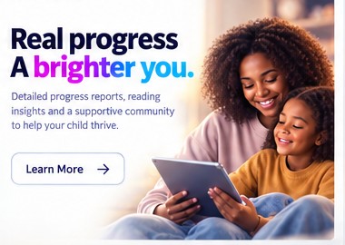

What did they read?
Stories and lesson activity are visible rather than disappearing into a generic score.
FOR PARENTS
Open Chapter makes the work underneath the experience visible: what was read, how the learner responded and what the mentor noticed.
See progress reporting →
WHAT YOU CAN ACTUALLY SEE
Stories and lesson activity are visible rather than disappearing into a generic score.
Comprehension and response patterns give context to progress.
Vocabulary, inference, expression and other reading skills can be connected to the work.
Human observations sit alongside the quantitative information.